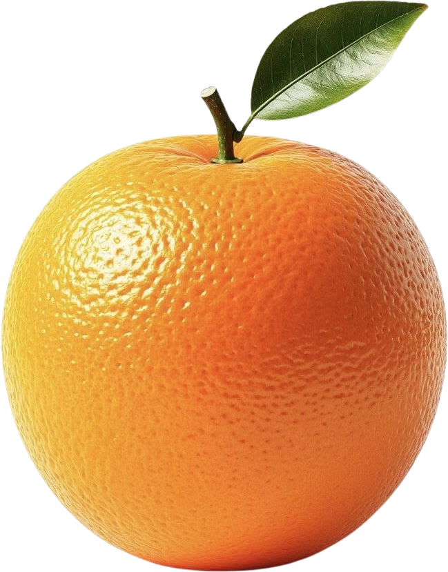

Produk Unggulan
Pandansari
Hasil bumi kebanggaan warga Pandansari. Ditanam di dataran tinggi lereng Semeru, menghasilkan tekstur buah yang segar, manis, dan berkualitas ekspor.
Kelompok Tani Makmur
Petani Lokal Bersertifikasi

Panen Segar
Kualitas Ekspor
Stok Tersedia